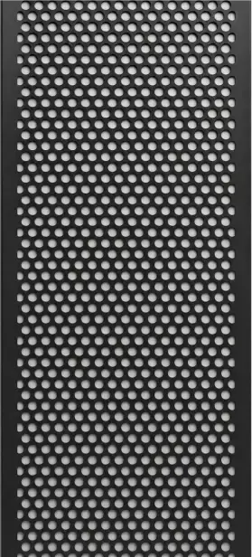
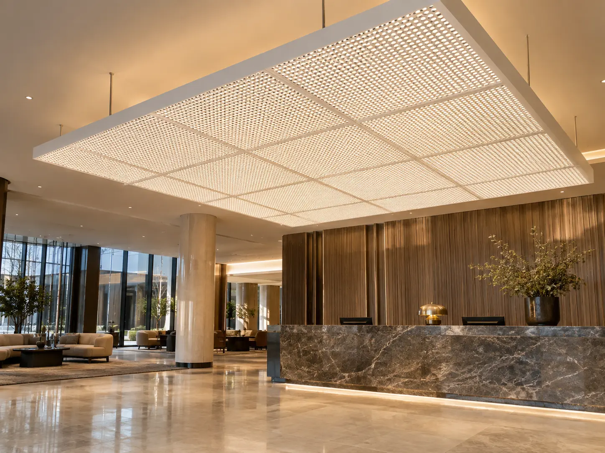
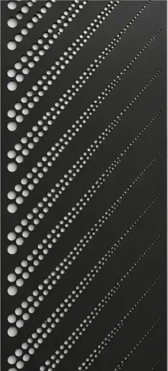
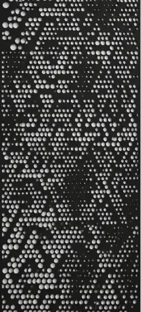
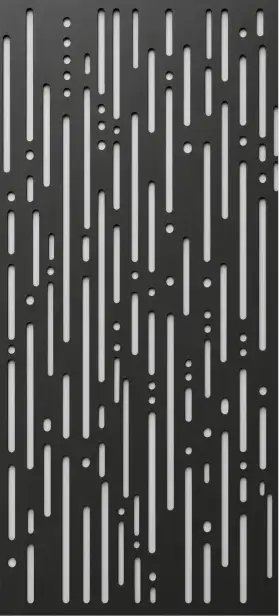
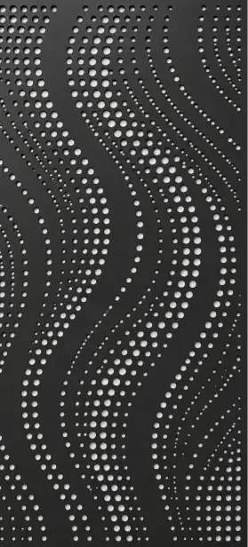
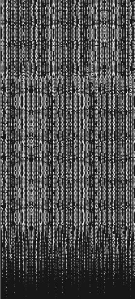
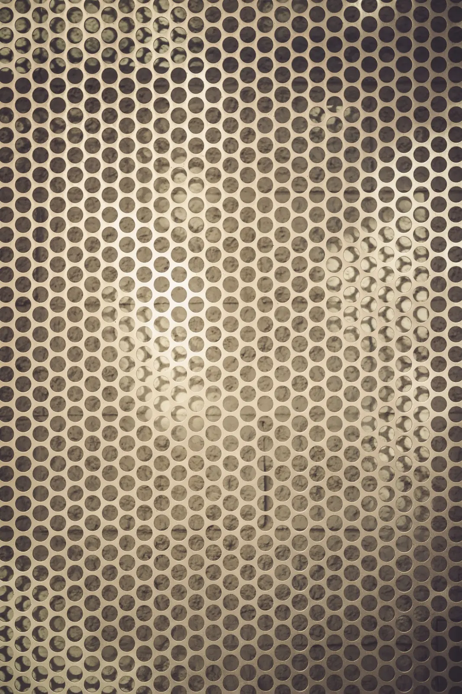

GENUINE METAL AND
BAGANTI’S FAUX METAL.
LumosPerfora creates perforated architectural surfaces. Metal uses removable metal panels. Faux Metal is Baganti’s in-house-developed fabric system that reproduces the appearance of perforated metal. Integrated lighting is optional for both.
Explore Metal + Faux Metal
COLLECTION PATTERNS OR YOUR OWN DESIGN.
The collection is available for Metal and Faux Metal. You can also submit any pattern, image or graphic for review. Final pattern details are confirmed for the selected material and production method.





GENUINE METAL OR BAGANTI’S FAUX METAL.

LumosPerfora Metal
Perforated metal panels attach to a magnetic structure. Remove the panels to access the lighting and components behind the surface.
Explore Metal
LumosPerfora Faux Metal
Developed in-house by Baganti, this lightweight perforated fabric reproduces the appearance of perforated metal. Widths up to 10 feet reduce the number of joints on large surfaces.
Explore Faux MetalDEVELOPED IN-HOUSE BY BAGANTI.
LumosPerfora Faux Metal is Baganti's lightweight, large-format alternative to perforated metal.
Choose a collection pattern or submit your own artwork. Fabric widths up to 10 feet allow wide coverage with fewer joints. Final dimensions, pattern feasibility and any cost savings are confirmed for the project.
PROJECT OPTIONS INCLUDE:
- Lower material weight
- Wider continuous coverage
- Fewer visible joints
- Potential cost savings compared with metal
- Custom patterns, graphics or colour
- Optional integrated lighting